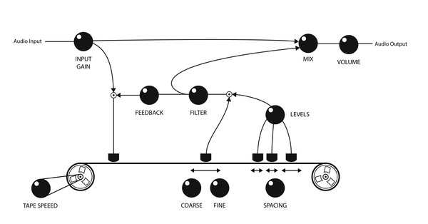
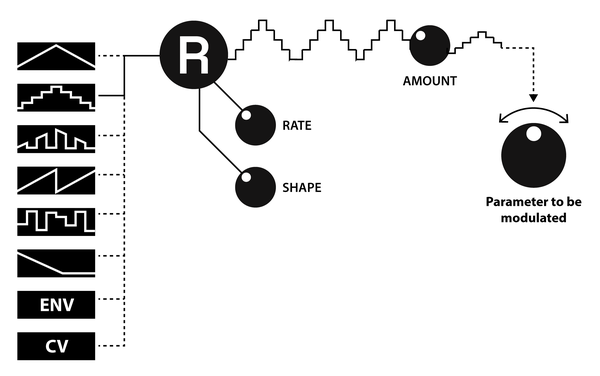
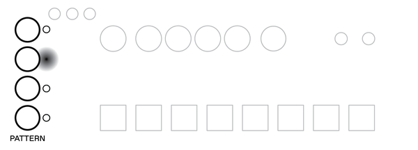
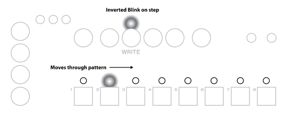
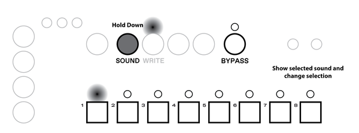
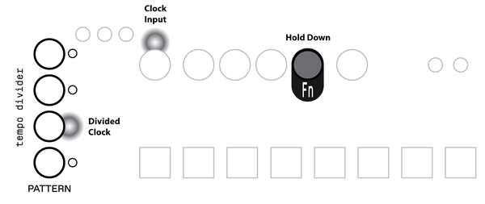

Introduction
This document is intended as a complete reference of Thyme’s functionality. Look here if you are searching for explanations of certain features or if you are one of those persons who likes to read through manuals before they use stuff. If you just want to know the bare minimum to get started, this and that will be your friends.
What is Thyme
Thyme is a versatile sound processing unit: It takes an audio input signal, modifies it and sends it to the output[1]. The digital sound processing that it is performed can be summarized as a “Sequenceable Robot-Operated Digital Tape Machine”. Here you see a greatly simplified illustration of its core functionality.

Imagine the tape moving from left to right (motor turning clockwise). The sound that is written to the tape by the write head will be read by the multiple read heads after certain time periods. These signals are summed, sent to the output and also added back to the input signal, creating a feedback loop.
All parameters of the signal processing can be tweaked live; either manually or by modulation sources which we call robots. Robots are similar to LFOs but go much further. On top of that, you can switch between different configurations with the single press of a button or with the integrated sequencer.
Functionality Overview
Before we dive deep into Thyme’s signal processing, let’s take a birds eye view on the instrument, its function blocks and how they interact
The core of the instrument is the Digital Tape Machine at which we took a brief look in the previous section; a detailed description will follow in the next section. It’s operation is defined by 9 parameters, which can be tweaked manually or each by their own dedicated robot.
All settings of all parameters and all robots combined is called a sound. There are 8 of these fully customizable sounds, one being active at a time. You can switch between the sounds manually or let the internal sequencer handle it for you - according to customizable patterns.[2]
Now, we are ready to investigate the function blocks in more detail.
Digital Tape Machine
Here’s a complete[3] illustration of Thyme’s Digital Tape Machine. The knobs symbolize parameters that can be manipulated.

| Input Gain | Before the input signal can be processed it needs to be amplified or attenuated depending on the signal source. This parameter sets the gain of the preamplifier. It is the only parameter that cannot be controlled by a robot and is constant for every sound. Set and Forget. The white LED indicates that some signal is active at the input, the red one indicates a signal that is too strong. |
| Tape Speed | Define how fast the tapes moves. |
| Delay Coarse and Delay Fine | Control the position of the main read head in relation to the write head. The coarse knob ranges from zero to a few seconds, the fine one just goes up to a few milliseconds. They both add up |
| Spacing | Macro control to change the position of the three remaining read heads together. |
| Levels | The read heads can have individual contributions to the feedback and output signal. This knob controls all of them at the same time. In the last quarter, the loop gain is greater than one, allowing self-excitation. |
| Feedback | The sum of all the read heads is scaled by this factor before it will be fed back to the input signal. On full, you get a loop gain of exactly one (provided Levels is off). |
| Filter | Next to scaling, you can also filter the feedback and output signal. In the lower half you control the cutoff frequency of a lowpass filter, in the upper half it’s a highpass. Right in the center position, the filter is bypassed. |
| Wet/Dry | Mix between processed and unprocessed signal. |
| Volume | Control the overall output volume. This parameter is global but different sounds can add different modulations by their robots. |
All parameters have their individual knobs, allowing you to tweak them all at the same time.
Mono Input Mode
When you insert a mono cable into the audio input, it would normally be interpreted and output as a stereo signal with one channel being silent. To avoid this, activate Mono Input Mode, which uses the one channel of the input signals for both channels. Hold down Fn and press BYPASS to toggle mono input mode. The current status is indicated while holding down Fn by the Bypass LED.

Knob Freezing
Before you start tweaking some knobs, you should be familiar with the special yet intuitive way the knobs react. In different views and different sounds, a single knob is used to set different values. This is realized by a concept we call 'knob freezing'. It is based on each knob being equipped with a dimmable LED. This LED indicates the current value of the knob - from 0 to full amount.
A knob can be frozen, meaning the value it holds (indicated by the LED) is decoupled from the position of the shaft. This happens for example when you switch to a different sound which has this particular parameter set differently.
To modify the value, the knob needs to be unfrozen, which can be achieved in two ways:
Quickly move the shaft a small amount in any direction. The knob value will transition to the current position of the shaft and will start tracking its movement. This method allows a quick but glitch-free modification of the controlled parameter
Move the shaft to the value indicated by the LED. After they match, the knob value will be tracking the shaft movement. This method ensures a very controlled modification of the parameter
Switches
In addition to the knobs, there are three switches that alter the behavior of the signal processing chain. You can activate them independently from each other with their dedicated buttons
Delay Sync
The position of the main read head defines the time the signal is delayed between writing it to the tape and reading it back. This time can be chosen freely or - when activating the SYNC switch - quantized to rhythmical intervals (eight-notes, quarters,..). The base tempo the intervals are derived from is the tempo of the sequencer. See the sequencer section for how to set this tempo. Sync is also active for extra read heads.
Delay Link
As the tape speed changes, it also takes a different amount of time for the tape to travel a fixed distance between write head and read head. Sometimes it might be desirable to keep this time constant. With the Delay Link switch enabled, the position of the main read head will be automatically adjusted when the tape speed changes in order to compensate for any effect on the delay time[5]
Freeze Mode
The Freeze Mode turns Thyme into a looping device. To achieve this, the flowgraph is dynamically reconfigured and some parameters slightly change their meaning: Once you trigger the Freeze Mode (either by activating it or by activating a sound that has freeze mode enabled), the clean input signal is written to the tape for the time equal to the main read head’s delay time. During that period, the feedback and delay knob LEDs are turned off. The input signal is also routed directly to the output.

After that, the input is disconnected and will only be reconnected once you deactivate freeze mode. There is now a closed loop with the tape and the feedback path.

The overall amplification of the loop is controlled by the feedback knob. When it is on full, there will be a steady loop; if it is lower, the signal will fade out over time.[6] The signal from the extra read heads is not mixed into the loop but only added to the output. This way you can use them to spice up your loop but always go back to the clean version. In the last quarter of the Levels knob, this behavior changes and the signal from the extra read heads start to get mixed into the loop.
Extended Parameter Settings
For some parameters there exist additional switches that allow to slightly alter the behavior of the machine. As they are less performative they are a bit more hidden.
| Parameter | Extended Setting |
|---|---|
| TAPE SPEED | LoFi Tape (LED on; default). When lowering the tape speed, the input signal is just resampled at a different rate with no additional filtering. This will cause interesting aliasing effects. Furthermore, the upsampling process is intentionally made less accurate with low tape speeds, emphasising this character even more. HiFi Tape (LED off). Before resampling, the input signal is lowpass-filtered to reduce aliasing; in the upsampling process linear interpolation is used. This implementation is closer to the behavior of an analog tape machine. |
| FEEDBACK | Negative Feedback (LED on; default) or positive Feedback (LED off). When building a comb filter, this will result in odd or even harmonics. |
| SPACING | The three extra read heads also react to the SYNC switch (LED on; default) or not (LED off). |
Change Extended Parameter Settings
To alter extended parameter settings, hold down Fn and twist the TAPE SPEED, FEEDBACK, or SPACING knob which toggles the corresponding setting on/off. The current state of each setting is shown by the knob LED.

Sounds
There are 8 sounds and a bypass sound to switch between. The regular sounds are pre-configured ‘empty’ - meaning all parameters are ‘off’ - and are meant to hold your custom sounds[7]. The bypass sound will pass the input signal unmodified to the output. Only the global Volume parameter can be tweaked.
Switch Sounds
You can switch between the sounds by pressing the dedicated button. The active sound is indicated by an LED.[8]
Robots
All parameters - except for input gain - each have their dedicated modulation source, called robot. This is indicated by the Symbol next to the knob.
Select a Robot
All robots work independently from each other and run at the same time; but you can only control one at a time. To select the one to control, press and hold down Robot Select.
The seletect robot will always be shown with full brightness. All other parameters display the output of their robot.
To select a different robot, simply move the corresponding knob a small amount. The selection change is directly indicated as explained above.
The output of the selected robot is at any time indicated by the dedicated robot LED


The robot’s output is mainly defined by three parameters: Mode, Rate and Shape. It is used to modulate the corresponding main parameter. With Amount you can define how strong this modulation is. Setting it to zero will turn off modulation by this robot.

Robot Modes
A robot can be one out of eight Modes and be controlled inside this mode by the two parameters Rate and Shape. In every mode they have a specific meaning but in general one may say that Rate refers to how fast the waveform changes and Shape changes its decoration. The modes can be divided into two groups: oscillators and non-oscillators.
Oscillator Modes
In all these robot modes, Rate controls the frequency of the oscillators. All pictures show oscillators for the same fixed Rate and Shape set off/mid/high
| Triangle |  Regular Triangle Oscillator without any waveshaping Regular Triangle Oscillator without any waveshaping |
 Stepped Triangle Stepped Triangle |
Triangle Oscillator resolution control: From regular triangle, via stairs up and down to rectangle |
 XOR’ed Flopping Triangle XOR’ed Flopping Triangle |
The Basic waveshape is a triangle oscillator turned off half of the time in regular intervals during on period. On top of that, parts of the waveform are inverted due to a XOR modulation. |
| Stepped Ramp | Like the Stepped Triangle but with a ramp as basic waveform |
| Stepped Random | Picks a random value in fixed time intervals. The transition between subsequent values can be hard (jumping) or smoothed out - however you set the Shape parameter. |
| One-Shot Decay |  Linear decay from full to off. Triggered when you activate the sound Linear decay from full to off. Triggered when you activate the sound |
Non-Oscillator Modes
| Envelope Follower | This robot tracks the loudness of the input signal in a specific frequency range. It will quickly react on peaks and then settle fast or slowly, depending on the Shape you set. With the Rate parameter, you can select the frequency range you want to track. The picture illustrates the effect of different Shape settings with a fixed Rate for a given input signal. |
 External Control Voltage External Control Voltage |
Use the external control voltage (inserted to CV jack) to modify a parameter. The Rate control has no effect, Shape let’s you add lowpass filtering. |
Change Robot Mode
You can select the mode[9] by holding down Robot Select and pressing the button corresponding to the mode symbol. The selected mode is indicated by an LED.

Change Robot Rate, Shape and Amount
The two parameters Rate and Shape are set by the same knob - press the knob to adjust shape, release to adjust rate.[10]

The amount knob - like all other knobs - is active in both cases.

Robot Sync
The frequency of oscillator-type robot modes can be quantized[11] to the sequencer’s tempo[12], similar to the Delay Sync.
Set Robot Sync
Press the dedicated button to enable/disable syncing for the selected robot. The status is indicated by the LED

Robot Polarity
A robot can modify a parameter in three directions: It can add its output to the knob value, it can subtract from it and it can modulate around it. There are three different settings: Negative, Bipolar[13] and Positive Polarity.
Set Robot Polarity
You can set the polarity of the selected robot by holding down Robot Select and pressing one of Freeze/Link/Sync. While holding down Robot Select, the current polarity is indicated by an LED.

Robot Phase
When activating a sound, all robots are setup according to the settings stored for this particular sound. Robots that are set to oscillator-type modes[14], also reset their outputs. Usually, they are set to zero, so - for example in triangular mode - the modulation is off in the very first moment and rises. This starting point can be also set to three other positions.
Set Robot Phase
You can set the polarity of the selected robot by holding down Robot Select and pressing one of the four Pattern buttons. While holding down Robot Select, the current phase setting is indicated by an LED.

Robot Stereo Polarity
Normally, both stereo channels are processed equally. When you activate stereo polarity on a robot, it will influence both channels in the opposite direction. For oscillator-type robots, this means phase-shifting the waveforms for both channels (on the left channel, the triangle oscillator is at its peak while it’s in its valley on the right channel), for Envelope and External, this means inverting the polarity (on the left left channel the robot would add up to the knob value, on the right channel it would subtract). In stereo polarity, the LEDs of the knobs indicate the current parameter value for the left channel only.
Set Robot Stereo Polarity
You can activate/deactivate stereo polarity of the selected robot by holding down Robot Select and pressing Robot Sync. While holding down Robot Select, the LED will indicate the current status.

Volt per Octave
When modulating Tape Speed or Delay Fine by external control voltage (by setting their robots to EXT mode), the voltage is not interpreted linearly but as volt-per-octave.
This means by applying a steady voltage of 1V to the jack, the tape speed or delay length would be doubled[15]; for 2V the factor would be 4 and so on[16].
Depending on the polarity setting, the modulated parameter is multiplied or divided by the factor defined by the control voltage. The mapping is done in a way that positive polarity would in most situations increase the pitch (higher tape speed, shorter delay) and negative polarity would reduce the pitch (lower tape speed, longer delay)[17].
Sequencer
The sequencer lets you switch between the eight sounds and the bypass sound automatically. The order of the sounds being activated is defined by a pattern. The speed the play head travels through the pattern is defined by the active clock source.
Pattern
A pattern is 8 steps long with each step being divided into 4 substeps, giving a sequence length of 32 positions. Every position contains either a reference to one of the eight sounds or to the bypass sound. Once the play head reaches a position with a new sound, it activates that sound.

Play & Stop Sequencer
The sequencer is started and stopped by the PLAY button.
When it is running, a transition to the next step is indicated by a blink on the WRITE LED. At the start of the sequence - when the first step is being activated - the pattern LEDs blink together once.
Playback will always start from the first step.

Change Pattern
You can select one out of four patterns[18] with the Pattern Buttons. The active pattern is indicated by the LED. When switching patterns while the sequencer is running, the play head is not reset.

Write and Live Mode
There are two modes for the sequencer that differ in the playback and recording behavior.
In Live Mode you can temporarily overwrite the pattern and use live recording. The Write Mode lets you precisely view the current position of the play head and set individual steps.
Switch Between Live and Write Mode
You can switch between the two modes by pressing WRITE. The current mode is indicated by the WRITE LED. When it’s off you are in live mode, when it’s on you are in write mode.
Live Mode
The aim of the live mode is to show the resulting sound changes of the sequencer, perform on top of a stored sequence and incorporate this performance into the sequence.
Playback
At any moment inside live mode, the currently active sound is indicated by the sound or bypass LED.
Recording
When the sequencer is running, you temporarily overwrite sound changes by pressing and holding the corresponding 1-8 Button or Bypass. Once you release the button, the sequencer will pick up its normal operation.
You can press multiple sound buttons of the same time. The most recent one will always be active.
To permanently overwrite the current pattern with your performance, press and hold down WRITE before performing. This is only possible while the sequencer is running.

Write Mode
The aim of the write mode is to edit a pattern more precisely and allow edits while the sequencer is not running.
Playback
The 1-8 buttons and LEDs now indicate the eight steps of the pattern. When you start the sequencer in write mode, you will see a blinking LED travel through the pattern. The four blinks on every step indicate its substeps. See more on substeps in section XY.

To modify the pattern, you first have to select the a sound before you can write it to a specific position.
Select A Sound to Write
Press and hold down the SOUND. The 1-8 LEDs and the BYPASS LED will now indicate the selected sound. Press the corresponding button to change the selection.

There are two ways to edit a pattern: on the step level or on the substep level
Step Editing
The 1-8 LEDs now indicate in which steps the selected sound is active.
When an LED is on, at least one of the substeps holds the selected sound. By shortly pressing the corresponding button, set all substeps to bypass.
When the LED is off, all substeps are set to a different sound (another regular sound or bypass). By shortly pressing the button, you set all substeps to the selected sound.
Please note, that pressing a 1-8 button longer will let you enter substep editing mode. So releasing after a long press does nothing.

Substep Editing
To modify a pattern on the substep level, hold down the 1-8 button that holds the substep you want to edit. After a short moment, the PATTERN LEDs will indicate the status of the substep. If an LED is on, that substep is set to the selected sound. Pressing the button will set the substep to bypass.
If an LED is off, that substep is set to sound different from the selected one (can be a regular sound or bypass). Pressing the button will set it to the selected sound.
Clock Source
The sequencer can run from one of the three different clock sources. Before a clock signal is used for the sequencer it passes a clock divider/multiplier

| Tap Tempo | Internally generated clock which can be set by TAP button |
| Analog Clock | Rising edges of signal passed to CLK input |
| MIDI[19] | Using beat clock messages from MIDI input |
Change Clock Source
You can change the clock source by holding down Fn and pressing Tap to cycle through the three options.
While holding down Fn the current clock source is indicated by the three LEDs above Freeze/Link/Sync button in the order indicated below the Tap button.

At any time, the signal of the selected clock is shown on the TAP LED.
For each clock source, there are four divider options
| Tap | CLK[20] | MIDI | |
|---|---|---|---|
| A | 2 substeps per tap | 1 substep per clock edge | 8 substeps per quarter note |
| B | 1 Substep per tap | 2 substeps per clock edge | 4 substeps per quarter note |
| C | 1 Substep per 2 taps | 1 step per clock edge | 2 substeps per quarter note |
| D | 1 Substep per 4 taps | 2 steps per clock edge | 1 substep per quarter note |
When changing the divider option, the sequencer will remain phase aligned with the input clock.
The dividers are independent from each other. So you can for example have option B activated for the Tap Source and Option D for MIDI.
The selected clock source and clock dividers will not be reset by power cycling.
Set Clock Divider
To change the divider option for the selected clock source, hold down Fn and press one of the PATTERN buttons. While holding down Fn, the selected the divider and the divided clock signal is shown by the pattern LEDs. 
Tap Tempo
When Tap is selected as a clock source, the speed of the sequencer can be set by the TAP button. The average time between two button presses will be taken as the time for one step[21]. When hitting the button only every few steps, they are only interpreted as resync events.
Furthermore, Thyme can be used as MIDI clock master when running from Tap clock.
Manual Resync
With any of the clock sources selected, hitting TAP triggers a resync between the sequencer and the active clock source. The detailed behavior is different for each clock source
| tap | Set both input clock and sequencer to the closest whole step.[22] This is triggered also during regular taps. |
| clk | Activate the first step right now. |
| midi | Activate the first step on the next MIDI clock message. [23] |
Memory
Thyme contains static memory storage, used to save sounds patterns and general settings.
Banks
As described in the previous sections, there are four patterns to switch between which can each contain any of the same 8 sounds. Together they form a memory bank.
There are eight of these independent[24] banks to switch between. Please note, that although switching banks is usually fast it can temporarily disturb syncing of delay time and oscillator robots. The sound processing however is guaranteed to be glitch-free.
Change Bank
To change to a different bank, hold down Fn for around one second. All 1-8 LEDs but one will light up. This indicates the active bank. Press one of the 1-8 buttons to switch the bank.

Copy & Paste
To quickly modify sounds, you can copy and paste them to and from different sound slots.
The copy being taken is a true copy, meaning you can modify the sound the copy was made from without modifying the copy itself.
Also you can copy and paste between banks.
Copy & Paste a Sound
To copy the active sound, hold down Fn and press WRITE, to overwrite the active sound with the stored copy, hold down Fn and press PLAY.[25]
Clear Sound or Pattern
You can reset sounds and patterns to their default values. For sounds this means bypass, for patterns this means all positions set to the bypass sound.
Clear Sound
To clear a sound, either hold down a 1-8 button and press BYPASS or hold down BYPASS and press a 1-8 button. The corresponding LED will blink once shortly to indicate success.
Clearing a sound is not possible in Write Mode because the sound buttons indicate steps not sounds.
Clear Pattern
To clear a pattern, either hold down a PATTERN button and press BYPASS or hold down BYPASS and press one of the PATTERN buttons. The corresponding LED will blink once shortly to indicate success.
Save
By default, all changes to sounds and patterns are dropped when power-cycling the device, so they must be saved explicitly.
Save Bank
To save all changes in the current bank (all eight sounds and all 4 patterns), hold down Fn and press SOUND. The 1-8 LEDs will blink three times to indicate a successful operation.

Persistent Settings
A few settings are automatically stored in static memory and reloaded when starting up
- Selected Clock Source
- Selected Divider Options for all Clock Sources
- Speed of Tap Tempo (stored when starting or stopping sequencer)
- Selected Bank
- Mono Input Mode on/off
- Downsampling Character
- MIDI Channel
Connectivity
| Power input | 5,5mm/2,1mm barrel jack, 7-12V, positive center, 400mA |
| Audio Input | 6,3mm stereo or mono, 10k input impedance, -infinity to +24dB gain |
| Audio Output | 2x 6,3mm mono |
| Headphone Output /w level adjust | 3,5mm stereo |
| Footswitch Input | 3,5mm mono, attach passive switch that connects shaft and tip |
| CLK Input | 3,5mm mono, 100k input impedance, trigger threshold at ~0,5V, rising edge, maximum 5V |
| Control Voltage Input | 3,5mm stereo Tip: 100k input impedance, range 0-5V Ring: 5V voltage source for use with passive voltage divider |
| MIDI Input and Output | Standard DIN connectors |
| Dimensions | Approximately 23cm x 12cm x 5cm |
Appendix
Randomize
You can randomly set all parameters of the current sound in three ways
| Fn + Robot Select + Freeze | Randomly pick all tape machine parameters; do not modify robots |
| Fn + Robot Select + Link | Randomly pick all robot settings; do not modify base tape machine parameters |
| Fn + Robot Select + Sync | Randomize both tape machine parameters and all robots; but only in a limited range around current values |
MIDI
Practically everything you set on the device itself can be achieved with MIDI commands.
Channel
Thyme listens to Voice Messages on a single channel. You can read and set the channel during device startup. The MIDI channel is persistently stored in the device’s memory.
Set MIDI Channel
When powering on the device, the knob LEDs will fade on and the current MIDI channel will be displayed by the sound LEDs.
When all LEDs are off but a single one is on, its position indicates a channel number from 1 to 8, when all are on but a single one off, its position indicates a channel number from 9 to 16.
To change the channel keep one of these button combinations pressed while powering up the device: Channel 1-8: 1-8 buttons Channel 9-16: Fn and 1-8 buttons
The new channel will be indicated right away, as described above.
Routing
All received MIDI messages are forwarded to the output (MIDI through).
The only messages generated by the device itself are realtime messages when Tap Tempo is used as clock source and the settings dump function (CC125).
Voice Messages
With MIDI Voice Messages you can switch between sounds and control all parameters of the selected sound[26].
The data byte of any midi control message is interpreted in one of these ways
| Scale | maps the received value to a different range. In most cases, this will be the range you can set with the parameter’s knob. For example Volume from off to full. |
| Select | maps the range of the received value to a few discrete values. For example select one out of eight robot modes with the values from 0 to 127. |
| Switch | special case of Select with high values mean ON and low ones OFF. For example turn on/off Delay Sync if value is greater/smaller than 64 |
| Trigger | ignores the data byte. Only the fact that a message of this number has been received triggers a certain action |
| Command | Type | Description |
|---|---|---|
| CC0 | Scale | Change Bank (Ignore values greater than number of banks) |
| CC1-CC9 | Multiple | Volume Settings Block |
| CC1 | Scale | Knob Value |
| CC2 | Scale | Robot Amount |
| CC3 | Scale | Robot Rate |
| CC4 | Scale | Robot Waveshape |
| CC5 | Select | Robot Mode |
| CC6 | Select | Robot Phase |
| CC7 | Select | Robot Polarity |
| CC8 | Switch | Robot Stereo Polarity |
| CC9 | Switch | Robot Oscillator Synced |
| CC10-CC18 | Multiple | Wet/Dry Settings Block |
| CC19-CC27 | Multiple | Tape Speed Settings Block |
| CC28-CC36 | Multiple | Feedback Settings Block |
| CC37-CC45 | Multiple | Filter Settings Block |
| CC46-CC54 | Multiple | Delay Coarse Settings Block |
| CC55-CC63 | Multiple | Delay Fine Settings Block |
| CC64 | Switch | Footswitch |
| CC65 | Trigger | Randomize only Parameters |
| CC66 | Trigger | Randomize only Robots |
| CC67 | Trigger | Randomize soft |
| CC68 | Switch | Delay Freeze |
| CC69 | Switch | Delay Link |
| CC70 | Switch | Delay Sync |
| CC71-CC79 | Multiple | Delay Shape Settings Block |
| CC80-CC88 | Multiple | Delay Spread Settings Block |
| CC89 | Switch | Karplus Strong Decay Time Compensation |
| CC90 | Select | Change Pattern |
| CC120 | Switch | Activate Bypass Sound |
| CC123 | Trigger | Clear History of received Note-Ons |
| CC125 | Trigger | Dump the settings of the current sound to MIDI output[27] |
| Pitchbend | Modify Tape Speed in range ⅓ to 3 relative to current value |
| Note-On/Off 0 | Select/Deselect Bypass Sound |
| Note-On/Off 1-8 | Select/Deselect Sounds 1-8 |
| Note-On 9-12 | Select pattern 1-4 |
| Note-On/Off 9-127 | Set fine delay time to frequency defined by note number |
For the two Note-Domains (selecting sound and setting fine delay time) only one can be active at a time. If multiple notes are on (for example by holding down multiple keys on a keyboard), the most recent one will be active. A history of active notes is tracked and once you release the latest note it falls back to the previous one.
Automations in Karplus-Strong-Configuration
Karplus-Strong is a synthesis technique based on physical modelling of a plucked string: A short delay and a filter are used to create a resonant loop (simulating the string) that can be excited with short bursts of noise (simulating the plucking).
Using the fine delay, filter and feedback knob, Thyme can be configured for Karplus-Strong-Synthesis allowing separate control over pitch, timbre and decay time.
To facilitate the use as a synthesizer, two parameter automations are implemented:
- When receiving MIDI Note-On messages 9-127 the fine delay knob is set to create a resonant frequency equal to the frequency defined by the MIDI note[28].
- The decay time in Karplus-Strong configuration is depending both on the delay time and the amount of feedback. To keep the delay time constant for different MIDI notes, the feedback is reduced for low notes. This feature can be enabled/disabled by CC89
Realtime Messages
In General, all realtime messages are forwarded like any other message. Depending on the active clock source they are also generated so that Thyme becomes a MIDI bus master. No matter which clock source is active, MIDI clock messages are always tracked in the background. So when switching to MIDI clock source, the sequencer will be set to the position where it would have been if it was running on MIDI clock all the time.
| Active Clock Source | Behavior |
|---|---|
| Tap | Start, Stop and Clock messages are generated according to the Tap Tempo and the play status of the sequencer. This only makes sense if there is no other master device up the bus. So as soon as any realtime message is received, Thyme senses a conflict and stops generating realtime messages. You can reset this and start sending messages again, by first selecting a different clock source and then re-selecting Tap. Received realtime messages are not processed. |
| CLK | Start and Stop messages are ignored. |
| MIDI | Start and Stop messages are used to control the sequencer. |
Bootloader
The device contains multiple microcontrollers, whose firmwares might be updated in the future. Flashing firmware images can be done via MIDI, so the only hardware required is a computer, a MIDI adapter and a MIDI cable.
The firmware images are packed into multiple SysEx messages, which are unpacked by the device bootloader and written to the internal flash memory.
To upload a new firmware, you first need to boot the device into Bootloader mode.
Enter Bootloader Mode
To boot into Bootloader mode, hold down Tap while powering up the device. You will see an animation on the 1-8 buttons indicating that you are now in bootloader mode and the device is ready to receive SysEx messages.
As the bootloader needs some time to process the SysEx messages, they may not be sent too fast by the computer. To ensure the correct timing, there are two different methods
MIDI file
Placing SysEx messages at certain positions in a MIDI file allows to define their timing. All you have to do is send[29] that MIDI file through the port Thyme is connected to.
Unfortunately there are hardly any[30] applications that do this fairly simple job so we wrote one ourselves. It can be downloaded for Linux, MacOS and Windows here. The usage is very straightforward: Open the downloaded MIDI file containing the firmware update, select the MIDI port Thyme is connect to and start the flashing.
Pure SysEx and Manual Timing
Another way to go is using the pure sysex messages without timing information and specifying the delay between messages manually. This method is generally slower and less ‘automated’ so we recommend this only if you have experience with this workflow.
On OSX you can use SysExLibrarian, on Windows go with MIDIOX.
For every SysEx file you send, the single parameter you have to specify is the pause between messages. The correct value depends on the specific SysEx file and will be published together with it on our website.
General Information
Flashing a firmware can take up to two minutes. Do not interrupt data or power connection during flashing. But don't be afraid, you cannot destroy your device like this. The bootloader will remain accessible and it's always possible to retry.
When a new firmware is being written by the bootloader, the device will indicate this by some LEDs. The exact pattern depends on which chips are flashed in which order. Please refer to the information that will be provided with the firmware file.
Hardware Tests
To test devices in our production the firmware contains self-tests. These tests are also present in the production firmware so you can run them yourself if you think your unit might be faulty.
Enter Test Mode
To run tests, you have to boot your device into a dedicated test mode by holding down all four pattern buttons while powering up the device. The four pattern LEDs indicate that you have entered test mode.
There are six different hardware tests which can be run in a row (to perform a general check) or individually (to track down an error).
Run tests
To run a single test, hold down the 1-8 button corresponding to the desired test (Button 2 to run only test number 2) and press PLAY. To run all the tests 1 to 6 after another, just press PLAY alone.
In case the selected single test(s) complete without an error, you will see a light travelling through the sound LEDs and bouncing off the edges.
A failure is indicated by 1-8 LED corresponding to the failed test being on and all knob LEDs flashing. Some tests also have individual failure indications that tell you more details about what went wrong. They are displayed before the general indication.
When a test failed, it can be restarted by pressing PLAY.
| ID | Name | Description | Manual Check | Special Failure Indication |
|---|---|---|---|---|
| 1 | Knobs | All knob LEDs turn on. Move a knob to both extremes to turn it off. When all are off, test is passed | No cross influence between knobs | None |
| 2 | Knob LEDs | Knobs LEDs fade in one after another | Smooth Fading | None |
| 3 | Buttons | Press button closest to the LED that lights up. Pressing the wrong button is an error. The last button is the footswitch. | None | LED closest to unexpected button is lit up. |
| 4 | EEPROM | All bytes of EEPROM are written to, read back and compared with expected value. Original data is preserved. Shows progress bar | None | None |
| 5 | Bootloader | Tries to enter bootloader mode on both boards. | None | None |
| 6 | MIDI | Connect MIDI cable between input and output. Devices sends data and checks if it can receive it | None | None |
[1] That’s the standard configuration. You can also use it as a synthesizer, generating audio without an input signal. But let’s leave this for later.. [2] This is referring to a single bank. There are 8 banks in total. Check Memory Section. [3] Again, that’s not really everything; But all you need to know to operate it [5] In some edge cases, a complete and exact compensation is not possible. [6] When entering freeze mode, the feedback is set to full to form a steady loop. The old value is restored once you leave freeze mode and feedback is on full in that moment. [7] By default, changes made to sounds are lost when power cycling the device. For persistent storage learn how to save sounds. [8] When switching sounds, some knobs might get frozen. Learn more about knob freezing. [9] When switching mode to EXT, amount is set to full [10] When switching between the two parameters, the knob is frozen. [11] For non-oscillator modes this setting is not available. [12] Learn how to set the sequencer’s tempo. [13] Bipolar is only available in oscillator-type modes [14] In non-oscillator-type modes, the phase setting is ignored [15] Given that Amount is on full [16] The control voltage may range from 0V to 5V, giving a maximum factor of 32. [17] Bipolar polarity cannot be set for robots that are in EXT mode [18] 4 patterns in this bank but 32 in total. See memory section. [19] MIDI clocks are always tracked, no matter if MIDI is currently used as clock source or not. When activating MIDI as a clock source, the sequencer jumps to the position it would be at if running on the MIDI clock the whole time. [20] The clock is not interpolated but intermediate (sub)steps are skipped when using divider B to D [21] This refers to the clock speed before the divider, as indicated by the TAP LED. [22] Realized by slowing down or speeding up certain clock domains. Any device down the bus running as MIDI slave from Thyme’s MIDI clock output will stay in sync with Thyme’s sequencer. [23] This can be used to sync to a MIDI clock that does not provide Start/Stop messages. But it can also cause desync; use with caution [24] Sounds of one bank cannot be used in a pattern from a different bank. [25] After performing Copy or Paste, all other Fn combinations are only accessible if you release and press again the Fn button. This is done to avoid accidentally changing banks. [26] The hardware interface and MIDI work concurrently. [27] This means sending CC1-CC63 and CC68-CC88 - according to the settings of the current sound - on the current input channel. [28] This is only accurate on full tape speed [29] Please note, that ‘sending’ the .mid file is something else than ‘playing it back’, which usually means interpreting it and generating sound from it. [30] On Linux you can use aplaymidi from the commandline